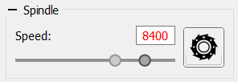

On the spindle‑control panel you will find:
The spindle speed can be set either by typing a number into the field or by using the slider.
Text in the input field may appear black if the current spindle speed matches the desired value, or red otherwise.
During CP transmission to the controller the spindle speed can be altered via the above controls using injected G‑code S, or through the "Correction" panel’s override function.
Spindle on/off during transmission is possible only while the controller is in Hold mode.